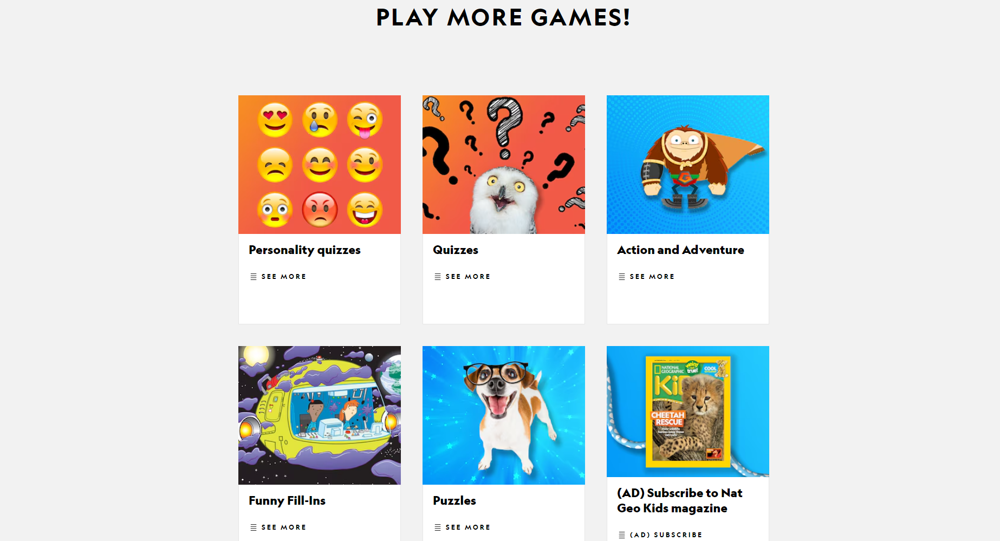
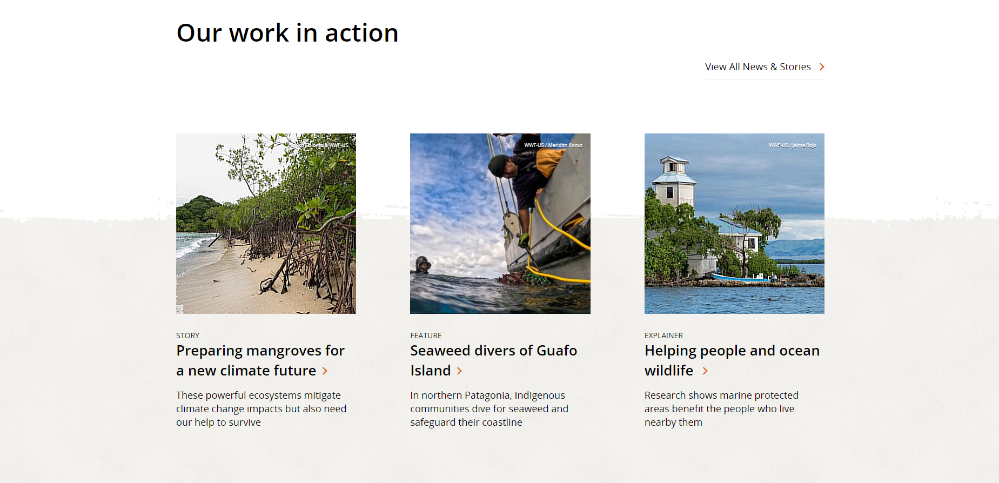
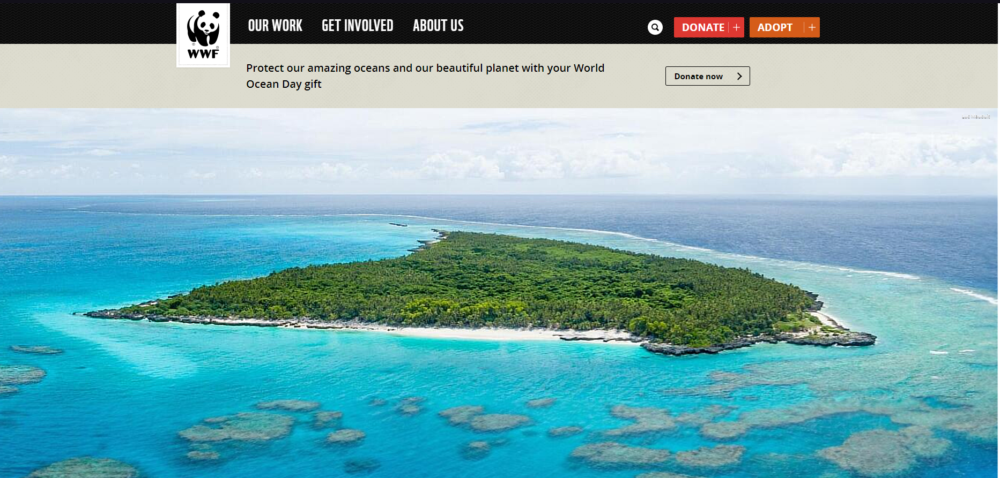
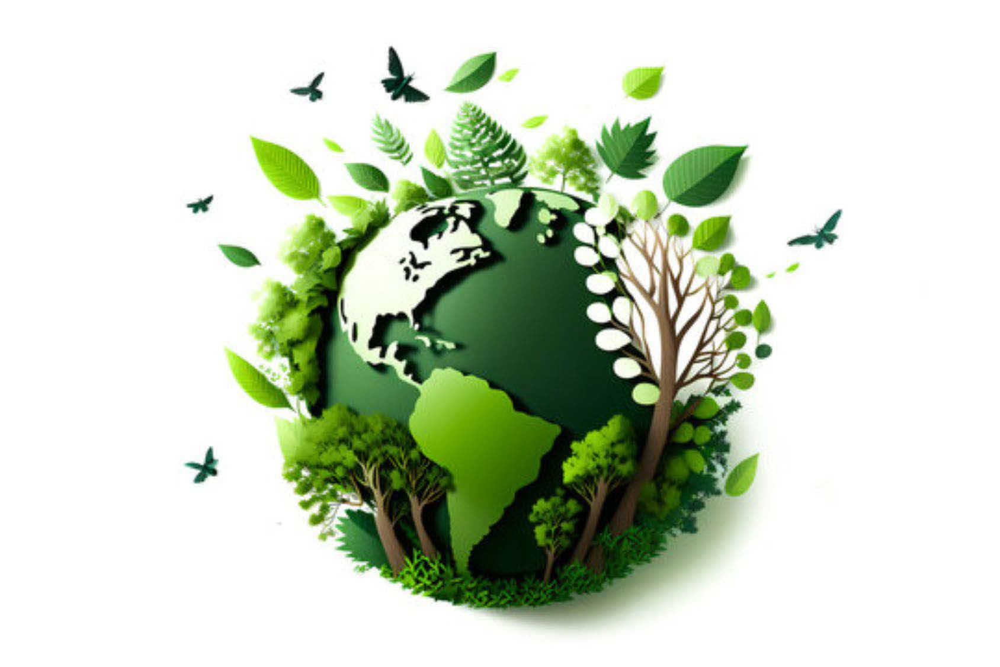

National Geographic Kids: გთავაზობთ სხვადასხვა თამაშებსა და ქვიზებს, რომლებიც დაკავშირებულია ცხოველებთან, ბუნებასთან და მის დაცვასთან.
WWF Wildfinder: ინტერაქტიული რუქის თამაში ველური ბუნების აღმოსაჩენად მთელს მსოფლიოში.
 Nature Conservancy :გთავაზობთ ინფორმაციას, რომლებიც დაკავშირებულია გარემოსდაცვით საკითხებთან.
ერთად შეგვიძლია ცვლილების განხორციელება. თანამშრომლობით, შეგვიძლია დავიცვათ ბუნება და უზრუნველვყოთ მდგრადი მომავალი, მომავალი თაობებისთვის.
